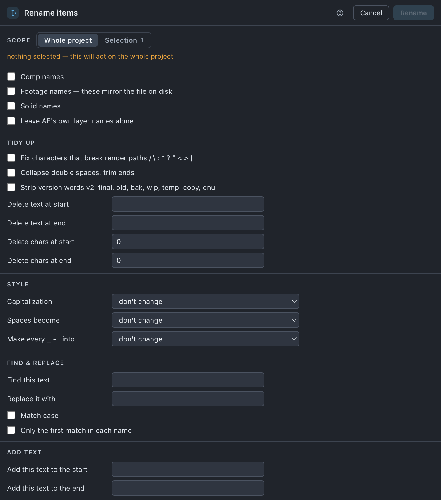

Rename
Bulk renaming — tidy-up rules, find and replace, added text and numbering — over your selection or the whole project, with the expressions that name things repaired as it goes.
Use it when
- A client's naming spec arrives and every comp has to carry the same prefix.
- Names picked up a
/or a:while you worked, and the render path will not take them. - A set has drifted into
shot_v01,shot_v2,shot_03and you want one shape. - You inherited a project named to somebody else's convention.
- Something was deleted out of a numbered set and there is a gap in the middle of it.
What it does
Applies your rules to item names in one pass, in a fixed order — remove a literal start or end, remove a count of characters, find and replace, style, add, number, then rebuild — so the result does not depend on which control you filled in first. The Applies to block at the top of the sheet says which kinds a run may touch — comps, solids, footage, and the names After Effects wrote itself. Anything renamed has the expressions that name it repaired at the same time, so a comp("Old Name") still resolves afterwards.
What it does not do: it never renames a file on disk — renaming a footage item only stops the item and its file matching — and Find is a literal string, never a pattern or a regular expression.
Do it
- Select items in the Project panel, or select nothing to work on the whole project.
- Press Rename, and under Applies to tick which kinds this run touches.
- Open the groups you need and set the rules. Groups you leave alone do nothing.
- Read the preview. It shows every row, not a sample — here there is no rule to trust, only what you typed.
- Press Rename n.
Scope. The switch offers Whole project and Selection (n), and when nothing is selected it says nothing selected — this will act on the whole project. At Selection scope the names of what you selected are listed under the switch. At whole-project scope the Applies to checkboxes decide what is eligible.

What you'll see
| Option | What it means |
|---|---|
| Applies to | Four inclusions — tick what the run may touch. Comps · Solids (on) · Footage — names mirror the file on disk (off, and the note is the reason) · Names After Effects wrote itself (off) — such as Layer 1/artwork.ai. |
| Tidy up | Fix characters that break render paths (on) — the example beside it names them, / \ : * ? " < > and the vertical bar. Collapse double spaces, trim ends (on) · Strip version words (off) — v2 final old bak wip temp copy dnu · Delete text at start / at end · Delete characters at start / at end |
| Style | Capitalization — don't change · lowercase · UPPERCASE · Title Case. Spaces become — don't change · underscore · dash · delete them. Make every _ - . into — don't change · underscore · dash. |
| Find & replace | Find · Replace with · match case (off) · first match only (off) |
| Add text | At the start · At the end · Insert text after a count of chars |
| Numbering | One question, Numbers — leave alone (default) · add a counter · restyle what's there — and each answer unlocks only its rows. Adding: Pad to · joined by · Goes (at the end · at the front) · Starting at · counted in (project order · alphabetical). Restyling: Pad to · joined by · Version marker (keep · force v · remove v) · A lone number is a version (box2 → box_v02) · Close gaps in a set (_1 _3 _4 → _1 _2 _3) |
| Name pattern | Pattern defines the whole name — {name} the name after everything above · {n} the counter — for example SHOT_{n}_{name}. {n} needs Numbers on add a counter; otherwise the field warns and {n} comes out empty. |
Notes it may raise, and what they mean:
- n names were left alone because the tidied version already exists. Two items with one name break every expression that refers to it. — the tidy-up rules hit a name that is taken.
- n left alone because that name is already taken. Two items with one name break every expression that refers to it. — the same guard, reported by the typed rules.
- n skipped — [KEEP] means never renamed.
- Every selected item is protected — [KEEP] means never renamed. — nothing to do; untag something or widen the selection.
Undo
One ⌘Z. Nothing on disk changes.
Watch out
Things you might not think to do
- Unify
shot_v01·shot_v2·shot_03. Numbers › restyle what's there with Version marker › force v keeps each item's own number and restyles it. - Close the gap in a set someone deleted out of, with Close gaps in a set under restyle what's there.
- Rebuild names to a client's spec in one field:
SHOT_{n}_{name}in Pattern, with Numbers on add a counter so{n}has something to place. - Fix render-breaking characters across a whole project in one press — that rule is on by default and usually finds nothing.
Pairs with
Number comps for the depth prefix, which strips and re-applies cleanly after this. Set up each project if you want items walked around. Run it before Sort disk if names feed your file layout.